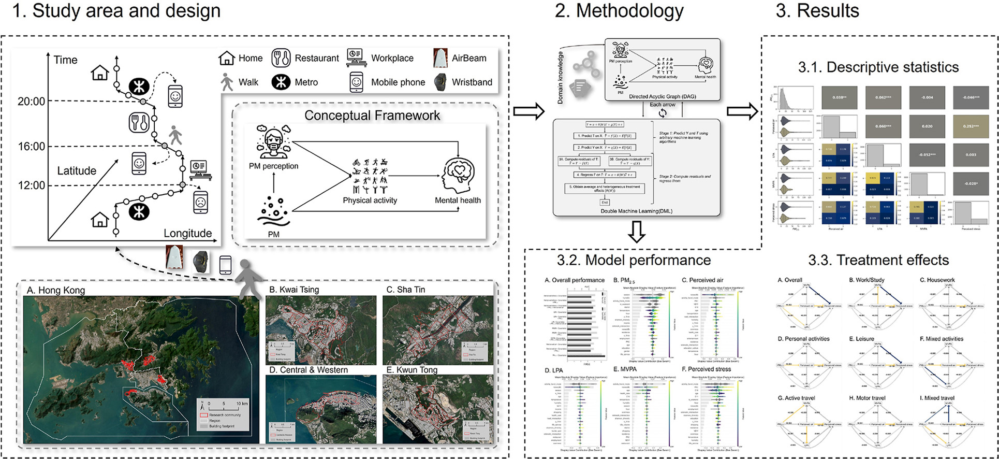
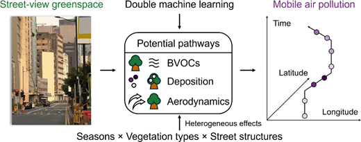
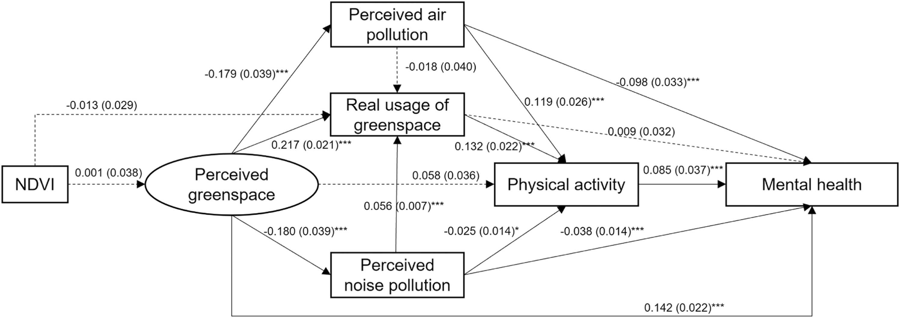
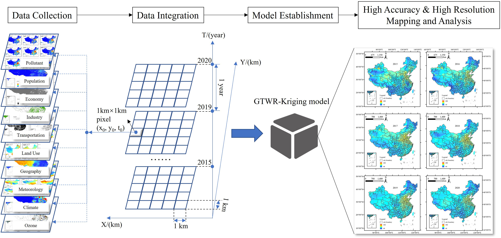
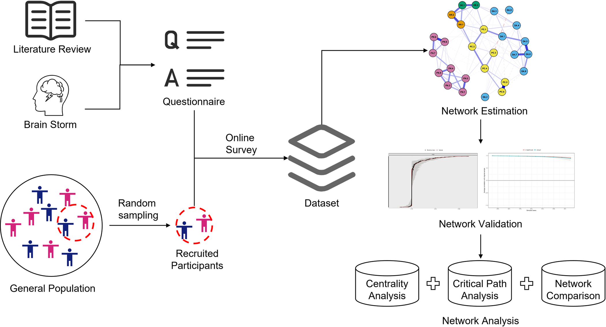
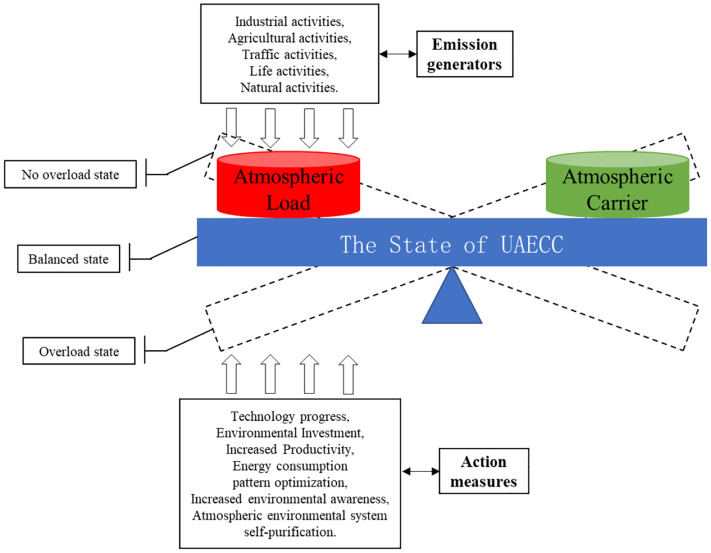
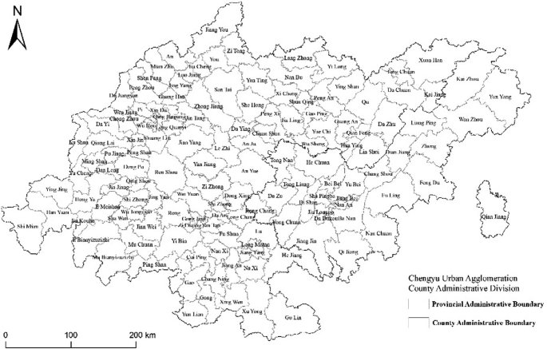

The interplay between actual and perceived air pollution, physical activity, and stress across mobility-based geographic contexts: A double machine learning approach
Social Science & Medicine 404, 119499, 2026
PostDoc, CUHK
I am now a PostDoc at the Institute of Space and Earth Information Science (ISEIS), The Chinese University of Hong Kong (CUHK). Previously, I received my PhD in Earth System and GeoInformation Science from CUHK under the supervision of Prof. Mei-Po Kwan. Before that, I obtained my MSc in Management Science (supervised by Prof. Liyin Shen) and Bachelor's degree in Construction Management from Chongqing University.
My research interests lie in 3D Urban Representation/Reconstruction, Multimodal Large Model, GeoAgent, Human Mobility, Causal Inference, Environmental and Health Geography. Recently, I am particularly interested in the knowledge-based product and algorithm development to reach and resolve real problems.
In my free time, I enjoy playing badminton and hiking.
Tel: +852 51049906 / +86 18702363435
Email: zhenchuanyang1229@gmail.com /
zhenchuanyang@cuhk.edu.hk
Address:
Room 209, Fok Ying Tung
Remote Sensing Science Building,
The Chinese University of Hong Kong,
Shatin, Hong Kong

Social Science & Medicine 404, 119499, 2026

Environmental Science & Technology 60(22), 15888–15900, 2026

Urban Forestry & Urban Greening 105, 128683, 2025

Environmental Research 279, 121748, 2025


Journal of Green Building 18(3), 167-184, 2023

Environmental Impact Assessment Review 92, 106692, 2022

Proceedings of the 25th International Symposium on Advancement of Construction Management and Real Estate, Springer, pp. 1059–1071, 2021
See the complete publication record on Google Scholar.
[12/2023] Bronze Award, 9th China International “Internet+” College Students Innovation and Entrepreneurship Competition.
[03/2023] Virtual presentation at the AAG Annual Meeting 2023.